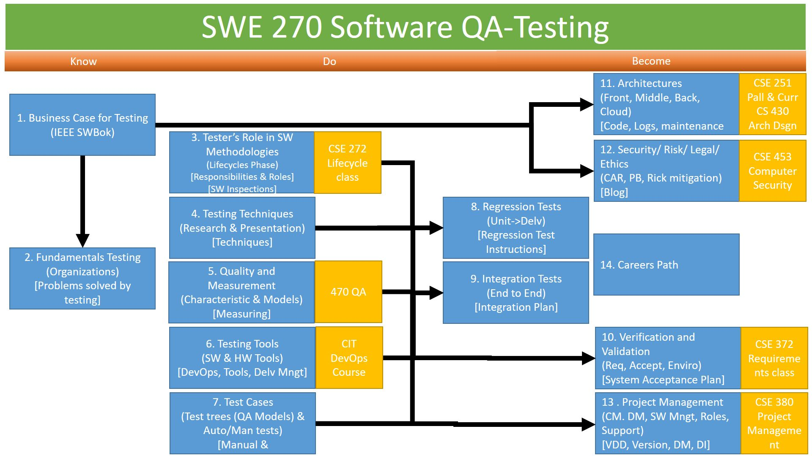

Notes for Classroom
Overview
In this course we will explore Software Testing standards, techniques, tools and cases
- Standards
- We will research Testing standards expected of a tester through associations, organizations, magazines, and web site resources.
- Techniques
- Summarize testing techniques (Exploratory, Domain, Flow, and Box) and how they are used in the development to delivery of a software product.
- Tools
- We will determine the critical roles that Testing has in DevOps. Also analyzing different tools available to tester to make the job easier, more efficient, and less prone to error.
- Cases
- We will demonstrate how to create through processes how to create different levels of tests, types of tests approval (Inspection, Demo, Sim, Test[Manual or Automated]), techniques to handle different programming principles.
Also we will be discussing Testing in relation to:
- Software Methodologies
- We will be exploring the responsibilities a tester must perform for each phase of a software lifecycle and how these phases integrate in different software methodologies (example: Waterfall, Spiral, Agile).
- Business needs
- We will be discussing business needs and return on investment opportunities for business to do the due diligence to provide testing resources, schedule and funds for testing.
- Quality & Measurement
- We will be analyzing methods to provide accurate data and coverage of the software to prove confidence that the product being delivered will be successful and fulfill the customer needs and expectations.
- System Architectures
- We will differentiate different testing needs for different architectures.
- Ethical and Security issues
- We will breakdown issues revolving around ethics, legal, and security
- Project Management
- We will determine how Testing fits into project managements and other roles that work synergic-ally with testing.
- Career paths
- We will explore different career paths, and qualitifications for each.
Objectives
By the end of the semester, each student will be able to:
- Classify (4) Professional, Business, Career field, Security Issues
- Appraise (5) different testing tools and justify which to use in a given scenario
- Assess (5) the different Testing Techniques and discriminate the different use of each
- Prepare (6) and Implement (3) Test Plans at different Levels using different Processes and Tools.
Class Organization:
The class is divided up in to 13 Modules:
Module are the Main points in the Course, the Lessons sub-topics found in the Module.
Module Names |
|
Module 0: |
Course Overview |
Module 1: |
Business Case for Testing |
Module 2: |
Fundamentals of Testing |
Module 3: |
Tester’s Role in Software Methodologies |
Module 4: |
Testing Techniques |
Module 5: |
Quality & Measurement |
Module 6: |
Testing Tools |
Module 7: |
Test Cases |
Module 8: |
Regression Tests |
Module 9: |
Integration Tests |
Module 10: |
Verification and Validation |
Module 11: |
Testing on Different Architectures |
Module 12: |
Testing Issues |
Module 13: |
Tester’s Role in Project Management |
Module 14 (Conc): |
Tester’s Career Path |
Course Module Relationship:

Before the Week Begins (Prepare)
Instructor Resources
Preparation:
- Create a speadsheet with students names - plug in information for Week 03 Prepare
Partnership/Group work:
- Week 3
During the Week (Teach)
Class Room Day 1:
- Class overview
- Assignments
- Prepare
- Reading, Quiz, and other Prepare
- Teach
- Classroom Discussion, Presentations, Activities
- Labs
- Prove
- Assignment
- Ponder
- Reflection of the week
- Prepare
- Assignments
- Hook Activity: Enagement: Story, Picture, Problem
- Pick from the following:
- Family Search Who am I related to
- What is the ultimate job?
- NASA Mission to Mars
- Pick from the following:
- Next Class
- Search the internet for articles about Testing.
Grading/Feedback (Prove & Ponder)
None
Looking Ahead
None
Post Mortem:
- None